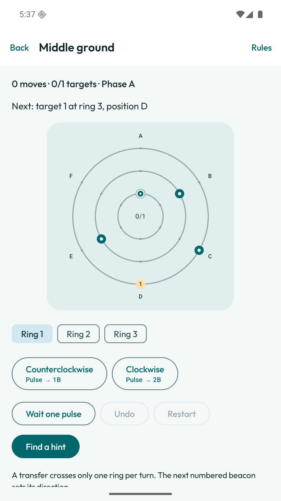
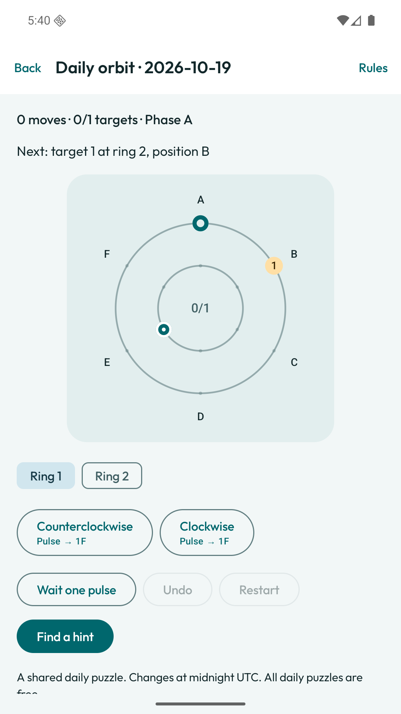
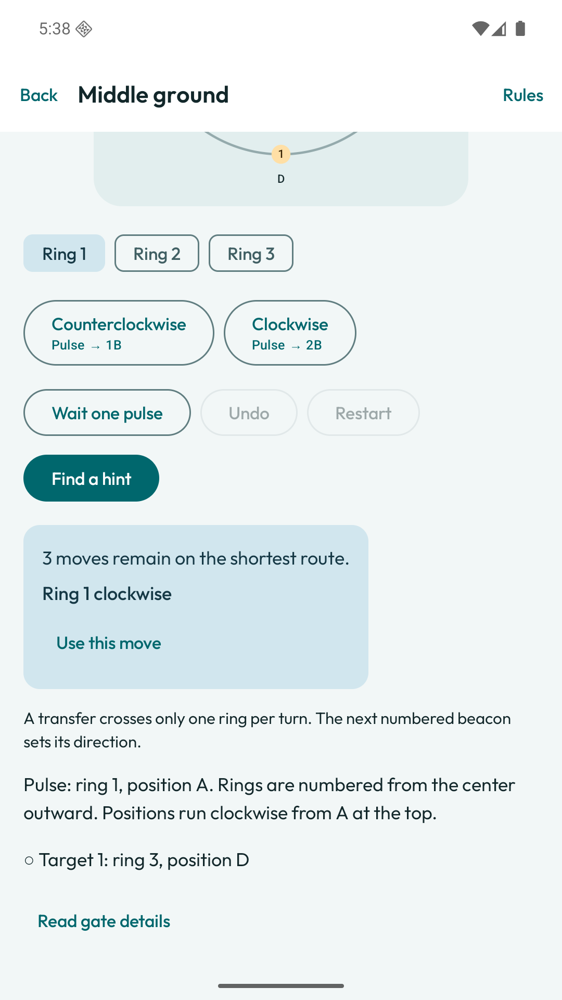

The free game
24 puzzles + daily orbits
- Two complete chapters
- Unlimited undo and shortest-route hints
- Shared puzzle imports and saved attempts
- Complete backup, restore and data access
A little room to think
Turn rings, align gates and reach each target in order. No timer. Plenty to think about.
Explore the puzzles
authored puzzles
across six chapters
Every rotation advances the pulse. Aligned gates open a crossing. Later chapters add changing phases and one-way gates.
Move previews show the next position. Undo is unlimited. A hint finds the shortest route from wherever you are.
Start with two free chapters. Keep playing with a daily orbit, selected offline from validated puzzle variants.

Changes at midnight UTC. No account or connection needed to play. Share your result when you choose.

See the next step, choose whether to use it, then keep exploring. Hints carry no penalty.
There are no ads, subscriptions or energy meters. Existing records and backup tools always remain accessible.
24 puzzles + daily orbits
48 more puzzles + editor
Launch price: US $2.99, UK £2.49, India ₹99. Google Play shows your local price before purchase.
Rotate a ring beneath the pulse, then the pulse moves one position clockwise. It crosses one ring toward the next target when both aligned gates allow it. Wait advances the pulse without rotating a ring.
Yes. Puzzles, daily orbits, hints and the editor run on your device. Buying or restoring the optional unlock requires a connection through Google Play.
Export a backup in Settings and restore it on the other device. Android cloud backup is disabled. Purchase ownership is restored separately through the same Google account.
Yes. Importing shared puzzles and playing existing records are free. Creating or editing puzzles with the visual editor requires the lifetime unlock.
Use labeled tap controls, move previews and text descriptions of gates. Light and dark themes, large-text layouts, optional sound and haptics, and reduced motion are supported.
The first release is undergoing internal Google Play testing. Public availability will be updated after review.